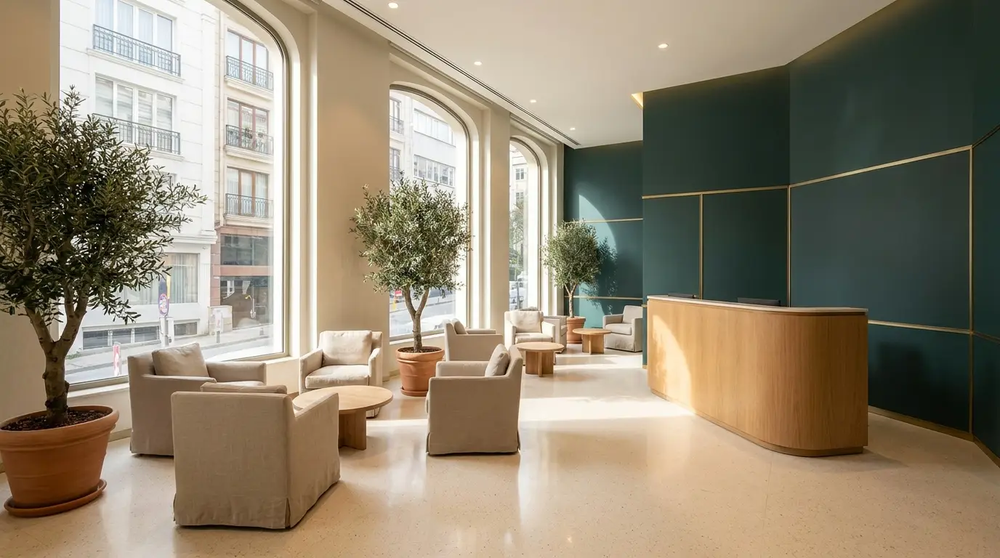

Bebeklerde ateş kaç dereceden itibaren takip edilmeli?
 Hekim onaylı içerik
Hekim onaylı içerik

Genel kabul, 38°C ve üzerinin ateş sayılmasıdır. 3 aydan küçük bebeklerde 38°C ve üzeri her ateş, başka belirti olmasa bile gecikmeden hekim değerlendirmesi gerektirir. Daha büyük bebeklerde ise derecenin yanı sıra bebeğin genel durumu, beslenmesi ve uyanıklığı en az ölçülen değer kadar önemlidir.
Ateş nasıl doğru ölçülür?
Ölçüm yöntemi hem sonucu hem de değerlendirmeyi etkiler. Sık kullanılan yöntemler şunlardır:
| Yöntem | Uygun kullanım | Not |
|---|---|---|
| Koltuk altı | Her yaşta pratik bir seçenek | Gerçek değerden biraz düşük ölçebilir |
| Kulaktan (timpanik) | 6 aydan büyük bebeklerde | Doğru yerleştirme önemlidir |
| Alından (temassız) | Hızlı tarama için | Ortam sıcaklığından etkilenebilir |
| Makattan (rektal) | Küçük bebeklerde en doğru sonuç | Hekiminizin önerisine göre kullanın |
Hangi yöntemi kullanırsanız kullanın, ölçümleri aynı yöntemle tekrarlamak izlemi kolaylaştırır.
Hangi değerler ateş kabul edilir?
- 38,0°C ve üzeri: ateş kabul edilir
- 37,5–38,0°C arası: hafif yükseklik; genel durumla birlikte izlenebilir
- Ölçüm yöntemine göre küçük farklar olabileceğini unutmayın
Unutulmaması gereken nokta şudur: ateşin yüksekliği kadar bebeğin genel görünümü — emmesi, uyanıklığı, cilt rengi ve size verdiği tepkiler — değerlendirmede belirleyicidir.
Evde izlemde neler yapılabilir?
- Bebeği ince giydirin; odayı ılık ve havalandırılmış tutun
- Sık sık emzirin ya da yaşına uygun biçimde sıvı verin
- Dinlenmesini sağlayın; zorla beslemeye çalışmayın
- Ölçümleri saatiyle birlikte not edin; hekim değerlendirmesinde çok yardımcı olur
- Soğuk suya sokma, alkol veya sirkeyle silme gibi yöntemleri kesinlikle uygulamayın
Ateş düşürücü ilaçların seçimi, dozu ve verilme sıklığı bebeğin yaşına ve kilosuna göre değişir; bu karar hekiminize aittir. Hekim önerisi olmadan ilaç vermeyin.
Hangi durumlarda vakit kaybetmemek gerekir?
- Bebek 3 aydan küçükse ve ateşi 38°C ve üzerindeyse
- Havale (ateşli nöbet) geçirdiyse
- Emmeyi reddediyor, uyandırmakta güçlük çekiyorsanız
- Ense sertliği, kabarık bıngıldak veya vücutta döküntü fark ettiyseniz
- İdrar sayısı azaldıysa, ağlarken gözyaşı çıkmıyorsa (susuz kalma bulguları)
- Ateş 72 saatten uzun sürüyorsa
Bu belirtilerden herhangi biri varsa en yakın acil servise başvurun ya da 112'yi arayın.
Sık sorulan sorular
Ateş kaç günde geçmezse hekime gitmeliyim?
Bebeğim havale geçirirse ne yapmalıyım?
Diş çıkarma yüksek ateş yapar mı?
Ateş düşürücüyü ne zaman vermeliyim?
Kaynakça
- T.C. Sağlık Bakanlığı — Halk Sağlığı Genel Müdürlüğü, çocukluk çağında ateş bilgilendirmeleri
- Türkiye Milli Pediatri Derneği — aile bilgilendirme yayınları
Kaynaklar bu örnek tasarım sunumunda temsilidir. Yayına alınacak içerikte güncel ve doğrulanabilir kaynaklara bağlantı verilir.
İçerikte hatalı veya güncelliğini yitirmiş bir bilgi olduğunu düşünüyorsanız site içerik editörümüze yazabilirsiniz: editor@ornek.com.tr. Bu yazı en son 20.06.2026 tarihinde gözden geçirilmiştir.